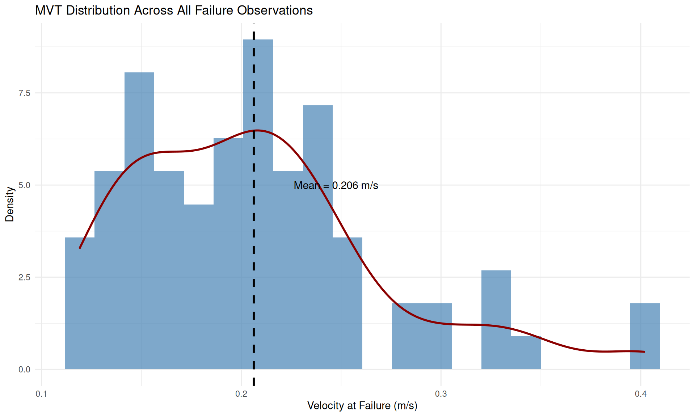
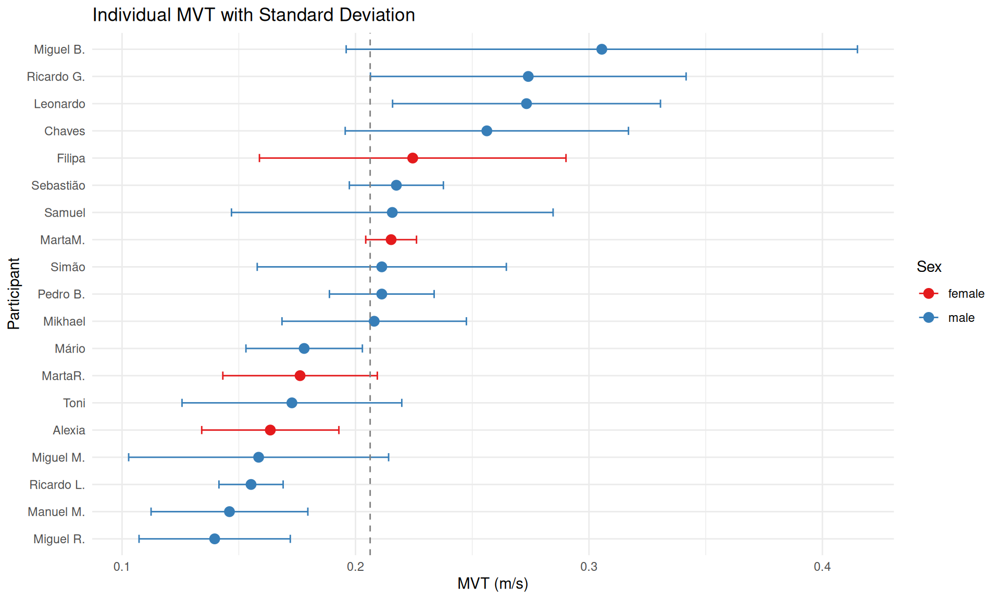
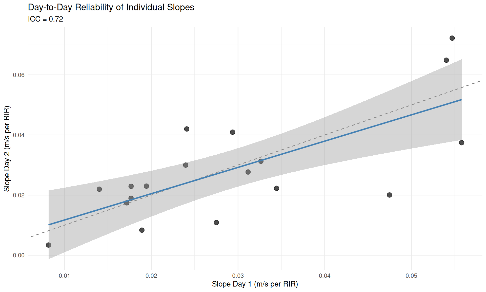
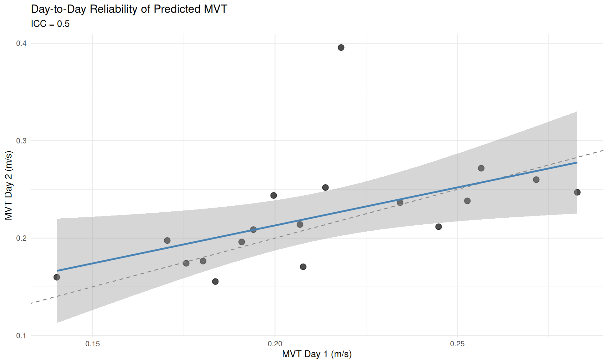
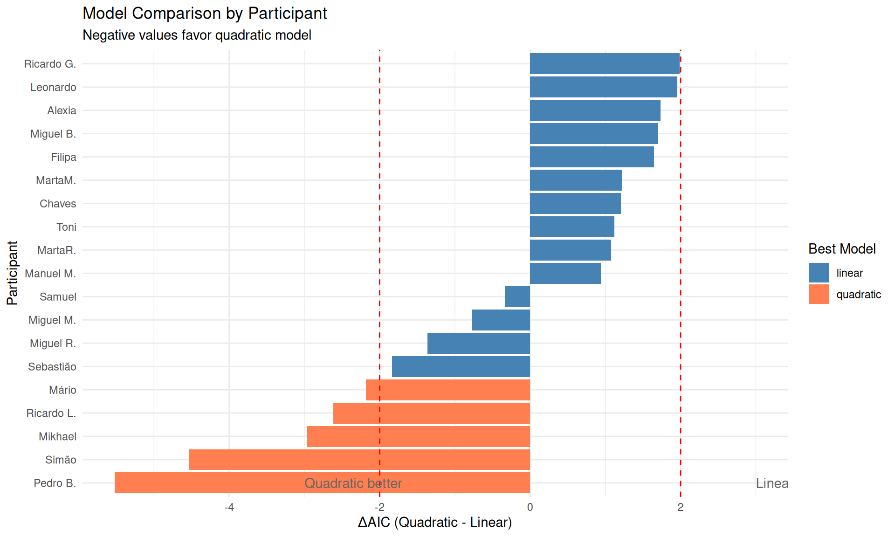
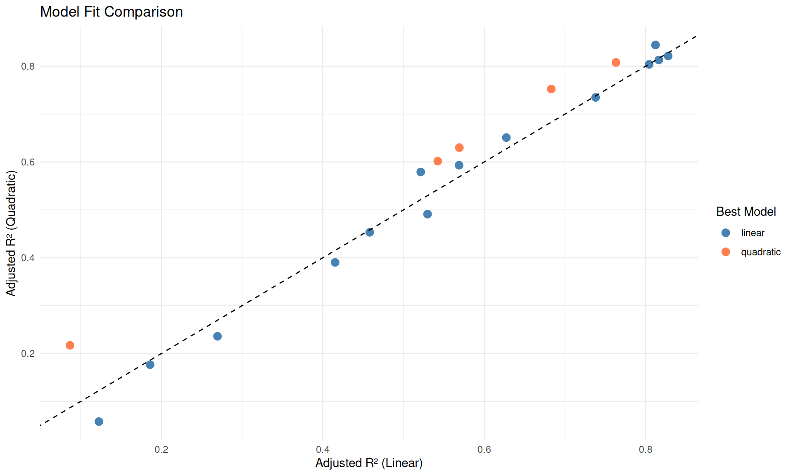
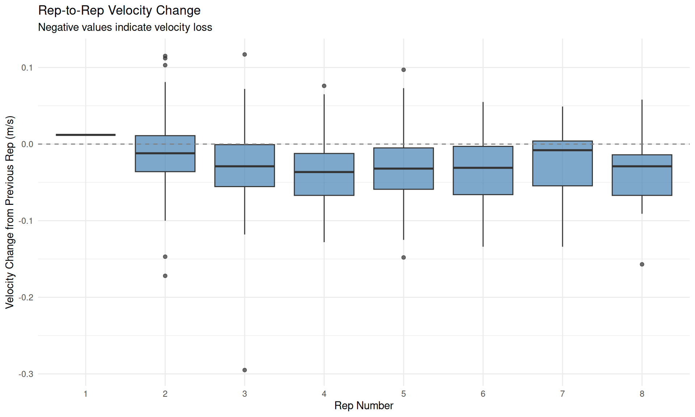
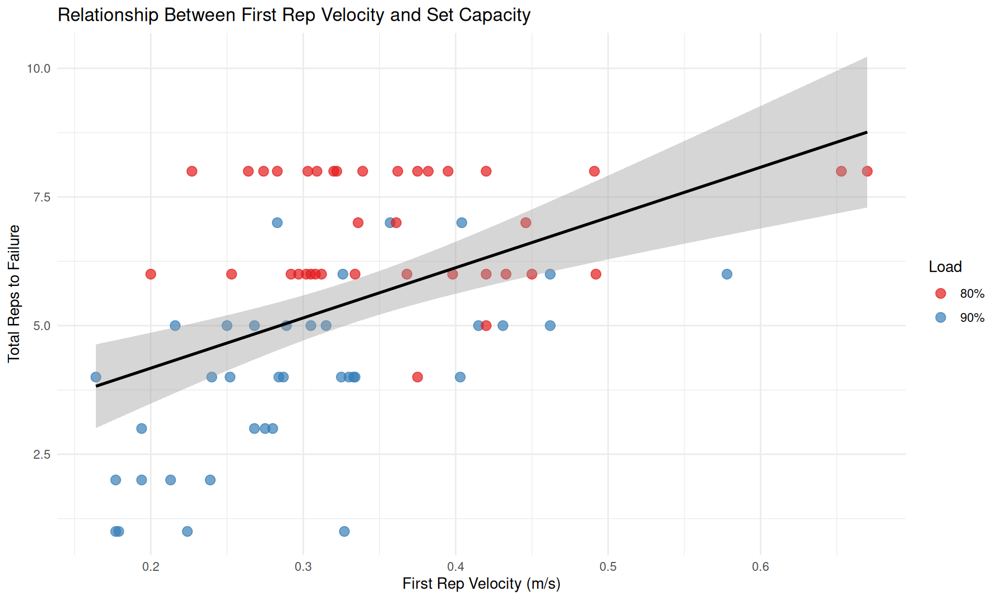

Participants: 19 Total observations: 406 Total sets: 74 Reps per set: 1 - 8 (mean: 5.5 )Novel Analyses for Velocity-Based Training Prescription
This study presents five novel analyses (H2-H6) that extend our understanding of the deadlift velocity-RIR relationship, addressing key gaps in the velocity-based training literature.
| Analysis | Result | Practical Implication |
|---|---|---|
| H2: MVT Variability | CV = 30.8% | Individual calibration essential |
| H3: Day Reliability | Slope ICC = 0.72 | Periodic recalibration needed |
| H4: Model Comparison | 26.3% prefer quadratic | Linear model adequate |
| H5: Velocity Decay | Accelerates (p = 0.035) | Non-linear considerations |
| H6: Failure Prediction | MAE = 1.29 reps | First rep velocity useful |
Participants: 19 Total observations: 406 Total sets: 74 Reps per set: 1 - 8 (mean: 5.5 )Protocol:
Data Structure:
Each observation represents a single repetition within a set to failure:
| id | day | load_percentage | set_id | rep_number | rir | mean_velocity | reps_to_failure |
|---|---|---|---|---|---|---|---|
| Sebastião | Day 1 | 90% | Sebastião_Day1_90pct_S1 | 1 | 3 | 0.333 | 4 |
| Sebastião | Day 1 | 90% | Sebastião_Day1_90pct_S1 | 2 | 2 | 0.293 | 4 |
| Sebastião | Day 1 | 90% | Sebastião_Day1_90pct_S1 | 3 | 1 | 0.235 | 4 |
| Sebastião | Day 1 | 90% | Sebastião_Day1_90pct_S1 | 4 | 0 | 0.246 | 4 |
| Sebastião | Day 1 | 80% | Sebastião_Day1_80pct_S2 | 1 | 5 | 0.398 | 6 |
| Sebastião | Day 1 | 80% | Sebastião_Day1_80pct_S2 | 2 | 4 | 0.363 | 6 |
| Sebastião | Day 1 | 80% | Sebastião_Day1_80pct_S2 | 3 | 3 | 0.386 | 6 |
| Sebastião | Day 1 | 80% | Sebastião_Day1_80pct_S2 | 4 | 2 | 0.387 | 6 |
| Sebastião | Day 1 | 80% | Sebastião_Day1_80pct_S2 | 5 | 1 | 0.325 | 6 |
| Sebastião | Day 1 | 80% | Sebastião_Day1_80pct_S2 | 6 | 0 | 0.206 | 6 |
How variable is the velocity at muscular failure (RIR=0) across individuals?
The Minimum Velocity Threshold (MVT) is the velocity at which an athlete reaches muscular failure. Understanding MVT variability has critical implications:
Population MVT Statistics: Mean: 0.206 m/s SD: 0.063 m/s CV: 30.8 % IQR: 0.082 m/s Range: 0.119 - 0.402 m/s# Extract failure data
failure_data <- data[data$rir == 0, ]
# Density plot
ggplot(failure_data, aes(x = mean_velocity)) +
geom_histogram(aes(y = after_stat(density)), bins = 20, fill = "steelblue", alpha = 0.7) +
geom_density(color = "darkred", linewidth = 1) +
geom_vline(xintercept = mvt_result$population_stats$mean,
linetype = "dashed", color = "black", linewidth = 1) +
annotate("text", x = mvt_result$population_stats$mean + 0.02, y = 5,
label = paste("Mean =", round(mvt_result$population_stats$mean, 3), "m/s"),
hjust = 0) +
labs(x = "Velocity at Failure (m/s)", y = "Density",
title = "MVT Distribution Across All Failure Observations") +
theme_minimal()
# Individual MVT plot
ind_mvt <- mvt_result$individual_stats
ind_mvt <- ind_mvt[order(ind_mvt$mean_mvt), ]
ind_mvt$id <- factor(ind_mvt$id, levels = ind_mvt$id)
ggplot(ind_mvt, aes(x = id, y = mean_mvt, color = sex)) +
geom_point(size = 3) +
geom_errorbar(aes(ymin = mean_mvt - sd_mvt, ymax = mean_mvt + sd_mvt),
width = 0.3) +
geom_hline(yintercept = mvt_result$population_stats$mean,
linetype = "dashed", color = "gray50") +
coord_flip() +
labs(x = "Participant", y = "MVT (m/s)",
title = "Individual MVT with Standard Deviation",
color = "Sex") +
scale_color_manual(values = c("female" = "#E41A1C", "male" = "#377EB8")) +
theme_minimal()
Load Comparison:
80% 1RM MVT: 0.217 ± 0.066 m/s90% 1RM MVT: 0.196 ± 0.061 m/sDifference: 0.021 m/sp-value: 0.148 Significant: FALSE The coefficient of variation (CV = 30.8%) indicates high inter-individual variability in MVT. This finding has important practical implications:
Are individual velocity-RIR relationships stable across testing days?
If velocity profiles are reliable day-to-day: - A single calibration session is sufficient to establish individual velocity zones - Athletes don’t need frequent retesting
If velocity profiles are unreliable: - Athletes need frequent recalibration (perhaps weekly or monthly) - Session-to-session factors (fatigue, recovery, motivation) may affect velocity targets
ICC Interpretation (Koo & Li, 2016):
| ICC | Interpretation |
|---|---|
| < 0.50 | Poor |
| 0.50-0.75 | Moderate |
| 0.75-0.90 | Good |
| > 0.90 | Excellent |
Slope ICC (velocity loss per RIR): ICC: 0.72 95% CI: 0.644 - 0.796 Interpretation: Moderate MVT ICC (predicted failure velocity): ICC: 0.498 95% CI: 0.379 - 0.617 Interpretation: Poor SEM: 0.024 m/s MDC95: 0.0666 m/sday_params <- reliability$day_parameters
# Slopes comparison
ggplot(day_params, aes(x = slope_day1, y = slope_day2)) +
geom_point(size = 3, alpha = 0.7) +
geom_abline(slope = 1, intercept = 0, linetype = "dashed", color = "gray50") +
geom_smooth(method = "lm", se = TRUE, color = "steelblue") +
labs(x = "Slope Day 1 (m/s per RIR)", y = "Slope Day 2 (m/s per RIR)",
title = "Day-to-Day Reliability of Individual Slopes",
subtitle = paste("ICC =", round(reliability$slope_icc$icc, 2))) +
theme_minimal()
ggplot(day_params, aes(x = mvt_day1, y = mvt_day2)) +
geom_point(size = 3, alpha = 0.7) +
geom_abline(slope = 1, intercept = 0, linetype = "dashed", color = "gray50") +
geom_smooth(method = "lm", se = TRUE, color = "steelblue") +
labs(x = "MVT Day 1 (m/s)", y = "MVT Day 2 (m/s)",
title = "Day-to-Day Reliability of Predicted MVT",
subtitle = paste("ICC =", round(reliability$mvt_icc$icc, 2))) +
theme_minimal()
Practical recommendation: Consider periodic recalibration (every 2-4 weeks) rather than relying on a single test session.
Does a quadratic model fit the velocity-RIR relationship better than linear?
If quadratic is substantially better, this suggests: - The velocity-RIR relationship is non-linear - Simple linear velocity zones may underestimate proximity to failure in the final reps - Coaches should use curvilinear charts or adjust expectations near failure
Individual Model Comparison: Participants analyzed: 19 Linear preferred: 14 Quadratic preferred: 5 ( 26.3 %) Avg R² improvement (quad - linear): 0.0164 ind_results <- poly_result$individual_results
ggplot(ind_results, aes(x = reorder(id, delta_aic), y = delta_aic, fill = best_model)) +
geom_col() +
geom_hline(yintercept = -2, linetype = "dashed", color = "red") +
geom_hline(yintercept = 2, linetype = "dashed", color = "red") +
annotate("text", x = 1, y = -3, label = "Quadratic better", hjust = 0, color = "gray40") +
annotate("text", x = 1, y = 3, label = "Linear better", hjust = 0, color = "gray40") +
coord_flip() +
labs(x = "Participant", y = "ΔAIC (Quadratic - Linear)",
title = "Model Comparison by Participant",
subtitle = "Negative values favor quadratic model",
fill = "Best Model") +
scale_fill_manual(values = c("linear" = "steelblue", "quadratic" = "coral")) +
theme_minimal()
ggplot(ind_results, aes(x = r2_adj_linear, y = r2_adj_quad)) +
geom_point(aes(color = best_model), size = 3) +
geom_abline(slope = 1, intercept = 0, linetype = "dashed") +
labs(x = "Adjusted R² (Linear)", y = "Adjusted R² (Quadratic)",
title = "Model Fit Comparison",
color = "Best Model") +
scale_color_manual(values = c("linear" = "steelblue", "quadratic" = "coral")) +
theme_minimal()
Only 26.3% of participants show a meaningfully better fit with the quadratic model. This suggests:
Note: While a minority of individuals may benefit from quadratic modeling, the linear approximation provides sufficient accuracy for practical applications.
How does velocity loss per rep change as a set progresses?
Understanding velocity decay patterns informs: - When to stop a set - if decay accelerates, stopping earlier preserves movement quality - Model selection - constant decay supports linear models; accelerating decay suggests non-linear approaches - Fatigue thresholds - identifying the rep where decay sharply increases
Velocity Decay Summary: Average decay per rep: -0.0283 m/s Early reps (1-3): -0.0206 m/s Late reps (4+): -0.0338 m/s Acceleration: -0.0132 m/sAcceleration Test: Slope: -0.00318 p-value: 0.03495 Interpretation: Decay accelerates toward failure # Create spaghetti plot of velocity trajectories
ggplot(data, aes(x = rep_number, y = mean_velocity, group = set_id)) +
geom_line(alpha = 0.3, color = "steelblue") +
stat_summary(aes(group = 1), fun = mean, geom = "line",
color = "darkred", linewidth = 1.5) +
stat_summary(aes(group = 1), fun = mean, geom = "point",
color = "darkred", size = 3) +
labs(x = "Rep Number", y = "Mean Velocity (m/s)",
title = "Velocity Trajectories Across Sets",
subtitle = "Individual sets (blue) with population mean (red)") +
theme_minimal()
# Decay by rep number
decay_data <- decay$set_trajectories
ggplot(decay_data, aes(x = factor(rep_number), y = delta_v)) +
geom_boxplot(fill = "steelblue", alpha = 0.7) +
geom_hline(yintercept = 0, linetype = "dashed", color = "gray50") +
labs(x = "Rep Number", y = "Velocity Change from Previous Rep (m/s)",
title = "Rep-to-Rep Velocity Change",
subtitle = "Negative values indicate velocity loss") +
theme_minimal()
Velocity decay accelerates as the set progresses (p = 0.035):
This 13.2 mm/s acceleration in decay rate suggests:
Can the first 1-3 rep velocities predict when failure will occur?
This is perhaps the most practically valuable analysis: - Real-time autoregulation: Predict total reps from the first rep velocity - No rep counting needed: Know when to stop based on velocity alone - Pre-set planning: Estimate how many reps are possible before starting
Leave-One-Set-Out Cross-Validation: Sets analyzed: 66 MAE: 1.29 reps RMSE: 1.53 reps R²: 0.065 Within ±1 rep: 42.4 % Within ±2 reps: 75.8 %| First Rep Velocity (m/s) | Predicted Reps | Lower 95% | Upper 95% |
|---|---|---|---|
| 0.1 | 4.9 | 1.8 | 8.0 |
| 0.2 | 5.2 | 2.1 | 8.3 |
| 0.2 | 5.4 | 2.4 | 8.5 |
| 0.3 | 5.7 | 2.6 | 8.7 |
| 0.3 | 6.0 | 2.9 | 9.0 |
| 0.4 | 6.2 | 3.2 | 9.3 |
| 0.5 | 6.5 | 3.4 | 9.6 |
| 0.5 | 6.8 | 3.7 | 9.9 |
| 0.6 | 7.0 | 3.9 | 10.2 |
# Prepare set-level data
set_data <- do.call(rbind, lapply(unique(data$set_id), function(sid) {
s <- data[data$set_id == sid, ]
s <- s[order(s$rep_number), ]
if (nrow(s) < 1) return(NULL)
data.frame(
set_id = sid,
v1 = s$mean_velocity[1],
reps_to_failure = s$reps_to_failure[1],
load_percentage = s$load_percentage[1]
)
}))
ggplot(set_data, aes(x = v1, y = reps_to_failure, color = load_percentage)) +
geom_point(size = 3, alpha = 0.7) +
geom_smooth(method = "lm", se = TRUE, aes(group = 1), color = "black") +
labs(x = "First Rep Velocity (m/s)", y = "Total Reps to Failure",
title = "Relationship Between First Rep Velocity and Set Capacity",
color = "Load") +
scale_color_manual(values = c("80%" = "#E41A1C", "90%" = "#377EB8")) +
theme_minimal()
The first rep velocity provides a reasonable prediction of set capacity:
Practical Application: Use the lookup table to estimate available reps from your first rep velocity. For example: - First rep at 0.30 m/s → Expect ~6 reps (95% PI: 3-9) - First rep at 0.45 m/s → Expect ~7 reps (95% PI: 3-10)
| Finding | Practical Recommendation |
|---|---|
| High MVT variability (CV = 31%) | Calibrate MVT individually for each athlete |
| Moderate slope reliability (ICC = 0.72) | Recalibrate velocity zones every 2-4 weeks |
| Linear model adequate | Use simple linear velocity zones |
| Decay accelerates near failure | Stop 1-2 reps from failure for quality |
| First rep predicts set capacity | Use first rep velocity for autoregulation |
Study 6 of the Deadlift RIR-Velocity Research Project
Analysis performed using R R version 4.3.3 (2024-02-29) with custom R6 classes following SOLID principles